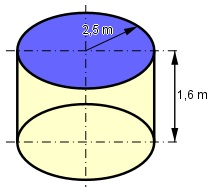

Aufgabe 189 Das Becken wird neu gefliest. Wie viel m2 Fliesen braucht man?Ein m2 Fliesen kostet 24,55 €, das Verlegen 8 €/m2. Wie hoch sind die Kosten einschließlich Mehrwertsteuer, wenn noch 10% Prozent für Verschnitt berücksichtigt werden.

Zu fliesen ist die Mantelfläche und die Grundfläche: M = 2 * π * r * h = = 2 * π * 2,5 m * 1,6 m = 25,1 m2 A = π * r2 = π * 2,52 m2 = 19,6 m2 Gesamtfläche = 25,1 m2 + 19,6 m2 = 44,7 m2 Fliesen + Verschnitt = 1,1 * 44,7 m2 = 49,2 m2 Kosten K einschließlich MwSt: K = 49,2 m2 * (24,55 €/m2 + 8 €/m2) * 1,19 = = 1 905,74 €